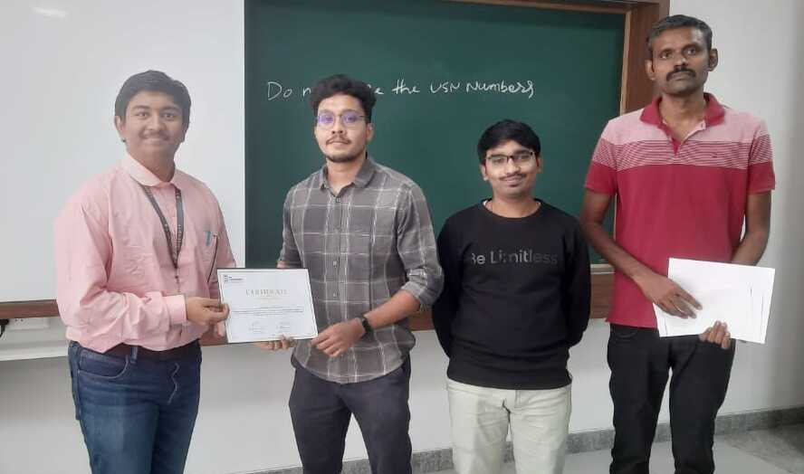

Achievements
A collection of academic recognitions, technical milestones, leadership roles, research achievements, artistic recognitions, competitions, publications, performances, and community contributions across technology, music, literature, public speaking, and innovation.

This Website led me here!
Coded overnight for Intro to Web Dev Hackathon at RV University
Best Paper
ICAICS 2025 — Springer
Quantum Entropy-Driven Temperature Scaling research paper with significant hallucination reduction in LLM systems.
Startup
FKCCI Manthan Finalist
Selected finalist recognition for startup and innovation initiatives including granty and AI-driven systems.
Music
Sri Lanka Cultural Delegate
Recognition and performances as part of Indo–Sri Lanka cultural exchange and musical events.
Technical & Academic
- Best Paper Award — ICAICS 2025 (Springer)
- Patent Filing — TAARA Cybersecurity Framework
- Karnataka Elevate 2024 Finalist
- Hackathon recognitions and technical competition awards
- Runners Up — Analytica Data Analysis Contest
- Best Game — Structured Innovation
- 8th Rank — Intercollege Coding Club Programme
- Multiple awards for science exhibition experiments
Leadership & Responsibility
- Founder & President — RUDRA
- Vice Chairperson — IEEE Student Branch
- Founder — IDeathon RVU
- Founder & Vice Chair — VYAASA
- CEO & Founder — Goodwinsun
- Chair — RV MUN 2022
- Organised debates, MUNs, speaking contests and student activities
Music, Literature & Public Speaking
- Sangeeta Prabhakar National Award
- Chamundeshwari National Award
- Tabla performances and recognitions
- Poems published in Pranava magazine
- Recognitions in writing, poetry, speaking and debates
- Noble Delegate — Model United Nations
- Public speaking and cultural recognitions